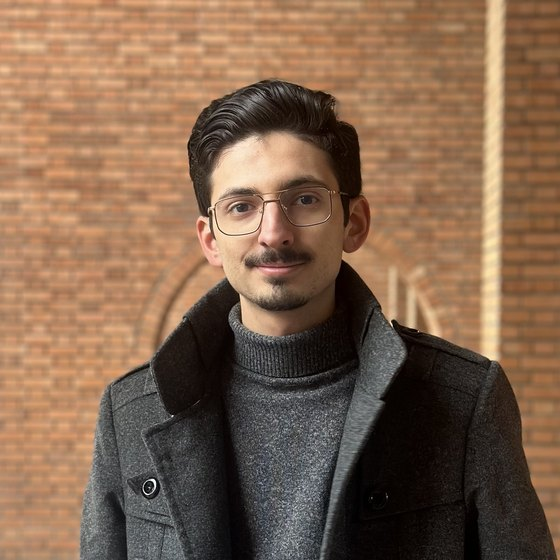

B.Sc. Computer Engineering, Sharif University of Technology
Tehran, Iran
I work on inference and approximation under uncertainty: when the thing you care about cannot be computed exactly — a posterior, a value function, an expectation over an intractable distribution — you compute an approximation instead, and the question that interests me is what licenses trusting it.
Steering a language model toward a reward implicitly defines a tilted target distribution, and the samplers used in practice do not draw from it — they draw from something nearby, and the gap is rarely measured. This work samples from the tilted target exactly in distribution, so the remaining cost is compute rather than a silent bias. Manuscript in preparation.
An empirical implementation of a theory-only ICML 2024 result: bridge functions identified from negative-control proxies, verified against an analytic oracle to machine precision, then extended to continuous state and action with a kernel backend. At full benchmark scale the confounding-blind baseline beat the corrected estimator in every cell of the sweep — identification is not estimation. I read the anchor papers and drove the implementation.
A search engine built from scratch, then embeddings and BERT fine-tuning, then a hybrid dense + sparse multimodal system with cross-encoder reranking.
A backtest of mine returned several hundred percent. This is the study of whether any of the reasons I gave for it hold up. They do not.
Chambolle-Pock and ADMM written from their update rules, checked against a solver rather than delegated to one.
Attention U-Net variants for segmentation, and Soft Actor-Critic built from scratch in PyTorch.
A SKIP LOCKED message queue feeding ~190M IMDb rows into PostgreSQL, then eight queries indexed with real before/after measurements. One index made its query slower; that is in the report too.
A version control system in C. Staging, commits, branches, merge, tags, pre-commit hooks. No libraries.
Head TA for Signals & Systems (Dr. Manzuri). Also Stochastic Processes and Probability & Statistics (Dr. Najafi), Machine Learning (Dr. Sharifi-Zarchi), Data Structures & Algorithms (Dr. Abam), and Linear Algebra (Dr. Rabiee & Dr. Ramezani).
An online Physics Olympiad school, started as a small study group, for students who have no selective high school near them. I teach the mechanics, electromagnetics and laboratory tracks and write problem sets for the national selection rounds.
GPA 19.38 / 20.0, ranked 15th of 183 — the departmental average for this cohort is 17.24. Stochastic Processes and Reinforcement Learning taken as graduate courses.
7th nationwide among more than 10,000 participants, and 2nd nationwide in the experimental examination. Admitted to Sharif through the olympiad medalist track.
An IYPT-format research tournament under the World Federation of Physics Competitions. Judged team defenses of open-ended physics research problems.